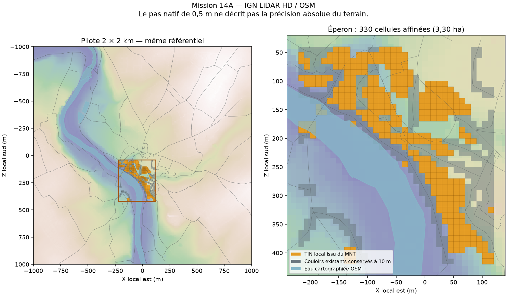

ENDLESS EARTH · 14A seulement
Une falaise mieux décrite.
La promenade comme contrainte.
Captures du vrai moteur Three.js. Même position absolue de caméra, orientation, FOV 55°, profil Équilibré, 960 × 640, 21 juin 2026, après-midi clair. Aucune illustration générée.

 Mission 13Mission 14A
Mission 13Mission 14AOriginal Mission 13 · Original Mission 14A
Le gain varie selon l’angle. Le témoin forestier est hors raffinement. Les architectures schématiques et la limite de hauteur du MNT restent visibles. Les stations du pont et de la falaise sont des poses d’inspection : elles ne prouvent pas un trajet praticable. Le pont n’est pas recalibré en 14A.

3,30 ha affinés dans le pilote de 400 ha. IGN / Licence Ouverte 2.0 ; OSM / ODbL. Même repère géographique.
Le premier candidat modifiait l’éligibilité de certains chemins. Les cellules des couloirs existants sont maintenant conservées à 10 m. Dans l’audit final, les 2 117 positions testées, les 920 nœuds, les 896 arêtes et le parcours de 450 m sont conservés.
Mission 14A : promenade réelle de 450 m, vue subjective, Éco, audio du jeu. Copie vidéo compacte VP9 ; temps et paquets audio Opus conservés. Ce trajet de non-régression est distinct des inspections de la falaise. Témoin historique Mission 13D (durée propre, pas de synchronisation image par image).
Rapport, coûts et limites · Comparaison des maillages · Médianes, P95 et pics · Audit des collisions / chemins · Replis et profils · Planche partageable